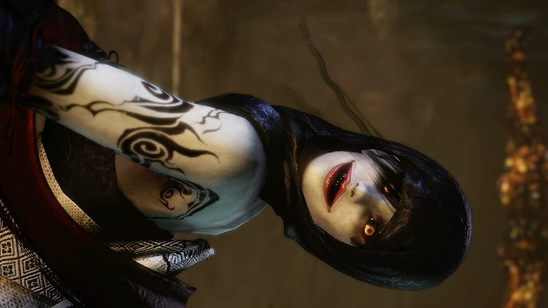
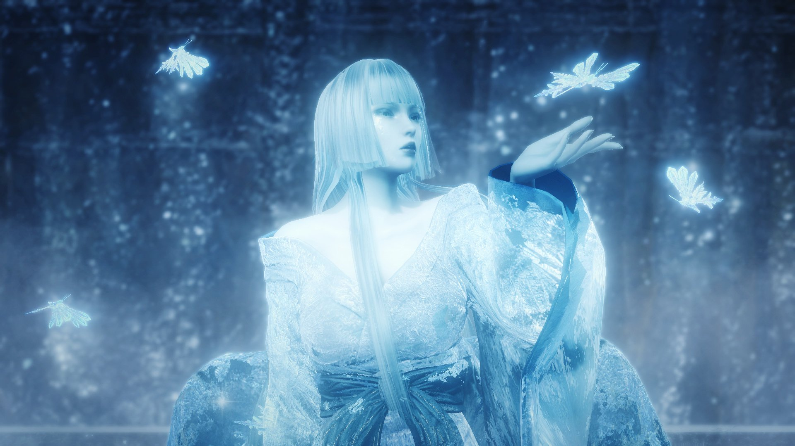
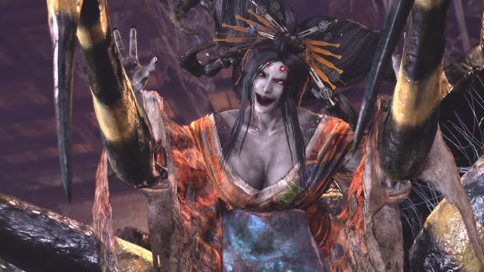
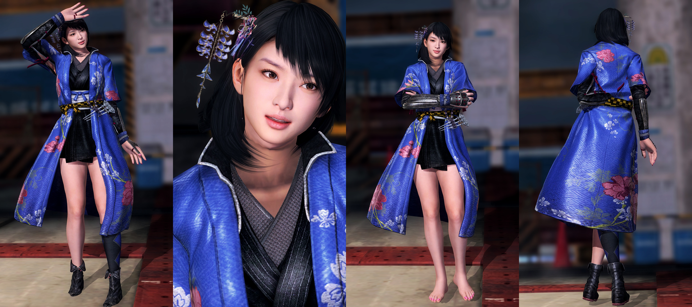

A melhor estratégia para derrubar Hino-Enma é ter muitas Agulhas Antiparalíticas à mão e uma boa quantidade de Pedras Espirituais. Hino-Enma lançará rajadas de energia em você, que podem paralisá-lo. Quando você está paralisado, ela se move para o golpe final. Quando você está paralisado, você pode usar as Agulhas Antiparalíticas para se libertar da maldição dela. Depois de fazer isso, ataque aqui toda vez que ela pousar. É melhor acertá-la apenas três vezes e depois recuar. Não seja ganancioso, ela é muito rápida e causa muito dano! Usar seu ataque de Guardião é uma boa maneira de derrotá-la rapidamente e também é uma boa maneira de evitar que ela o paralise. Depois de ativar seu ataque de Guardião, ela cairá no chão e ficará sentada por um momento. Acerte-a um pouco e evite-a quando ela se levantar. Ela tentará agarrá-lo, se você esquivar com sucesso desse movimento, você pode continuar atacando-a até que sua habilidade de Guardião se esgote. Se você tiver Pedras Espirituais, poderá usá-las para recuperar rapidamente seu Guardião novamente.
Yuki Onna
Yuki-onna é a chefe #12 em Nioh. Use armas de longo alcance contra ela (Bow / Rifle). Ela não tem muita saúde, então ela morrerá rapidamente. Ela é muito resistente em combate corpo a corpo. Se você quer fazer combate corpo a corpo sempre desvie para o lado quando ela lançar algo. Desvie quando ela lançar gelo ao redor dela, então desvie em direção a ela novamente para conseguir alguns golpes rápidos. Realmente a única janela que você tem para ataques de combate corpo a corpo é depois que ela lançar gelo sob seus pés ou respirar gelo. Quando a saúde dela cai abaixo de 50%, ela fica totalmente aggro e você deve realmente começar a usar sua arma e arco. Guarde sua arma viva caso as armas de longo alcance não acabem com ela.
Joro Gumo
Joro-Gumo é um chefe em Nioh . O jogador terá que enfrentar este yokai para prosseguir com o jogo. Pronuncia-se JOH-ro GOO-mo. Uma fusão horrível do torso de uma mulher e com a parte inferior do corpo de uma aranha. Enreda os humanos em seus fios pegajosos e os devora vivos. Apesar de seu tamanho gigante, pode escalar livremente paredes e tetos. Suas pernas de aracnídeo são cobertas por uma casca grossa, tornando-as altamente resistentes a danos.
Okatsu
Okatsu é o chefe nº 23 em Nioh. Seus ataques são muito rápidos, mas fracos. Depois de desviar de um de seus combos, use uma lança na posição intermediária contra ela. Quebre a guarda dela usando ataques fortes (triângulo de imprensa) então faça um finalizador no chão. Use armadura muito leve e o Kato Spirit para recarregar o KI rapidamente. Quando ela está encurralada, você pode enviar ataques fortes até que a guarda dela quebre. Alternativamente, se você tiver a habilidade de lança desbloqueada (postura alta), envie-a para ela. Ela tem problemas para bloqueá-lo e será imediatamente derrubada no chão, onde você pode seguir com um finalizador. Quando ela começar a brilhar em amarelo, ela ficará vulnerável por alguns segundos - corra em direção a ela e ataque imediatamente.
Maria
Maria é uma espanhola que serviu ao lado de Date Masamune, o conquistador de Oshu. Com os laços profundos da família Date com a Espanha, dizia-se que muitos espanhóis ganharam o favor de Masamune, incluindo um enviado do rei da Espanha, que recebeu uma audiência com ele. No entanto, a beleza de cabelos loiros de Maria desmente sua inteligência e visão aguçadas; ela não é uma atendente comum. Na realidade, ela é uma espiã disfarçada cuja missão era criar o caos no Japão para capturar Amrita e usá-la para a glória da Espanha. Desde sua derrota naval para a Inglaterra, o Império Espanhol era uma sombra de seu antigo eu e esperava usar Amrita para recuperar seu status de potência mundial. No entanto, graças aos esforços de William, a rebelião de Masamune foi reprimida e Maria foi forçada a se esconder. No entanto, suas palavras ao partir sugeriram um caos e discórdia muito maiores ainda por vir. Maria é altamente habilidosa com um florete e também é capaz de feitiçaria usando o poder de Amrita. Ela também pode usar técnicas que se assemelham a ninjutsu, fazendo com que Hanzo a descreva como uma ninja espanhola. Seu objetivo principal é completar sua missão e, como tal, ela prefere evitar conflitos, mas suas habilidades em batalha não devem ser tomadas de ânimo leve.